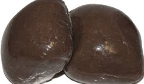
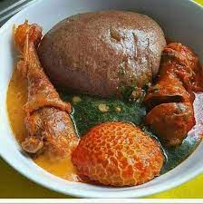

Amala is a traditional Nigerian cuisine that is popular
in the southwestern part of Nigeria, particularly among the Yoruba tribe.
It is a type of swallow made from yam flour and is usually served with a
soup stew, such as Ewedu, gbegiri, Okro soup, Egusi Soup, efo riro, and
Ogbono Soup,
obe ata.


How to prepare:
-
Bring the water to a rolling boil.
- Turn down the heat to medium and stir in the yam flour as quickly as
possible to prevent lumps until it becomes doughy.
- Scrape down the sides of the pot, and add a splash of water.
Then cover and let it cook for about 5 minutes.
- Stir again and add more water if needed
until the amala becomes sticky, light, and elastic.
- Serve with your choice of soup or stew.